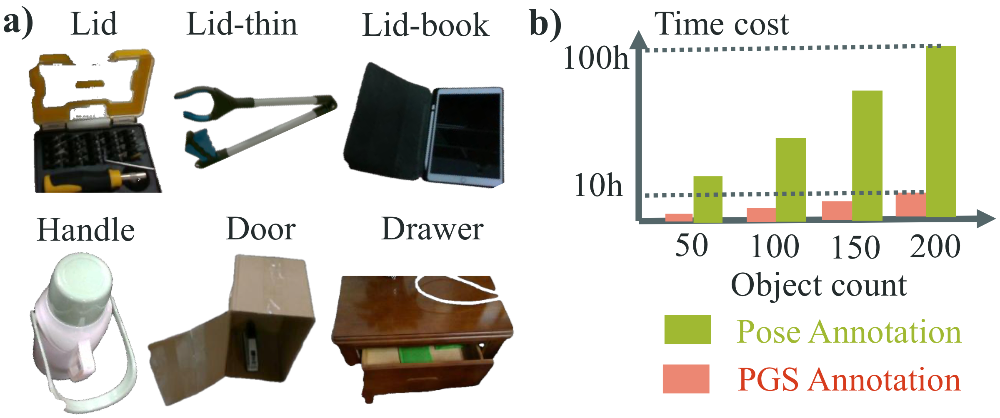
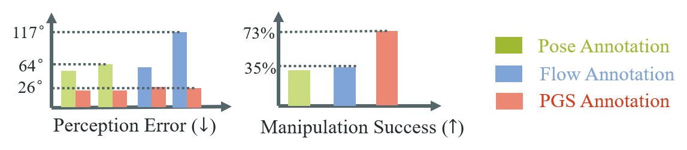

For object manipulation, we deploy a heuristic policy based on PGS prediction.
Without any in-domain fine-tuning, our method achieves a 73% success rate, covering 270 initial states for 9 objects.


For object manipulation, we deploy a heuristic policy based on PGS prediction.
Without any in-domain fine-tuning, our method achieves a 73% success rate, covering 270 initial states for 9 objects.
TODO